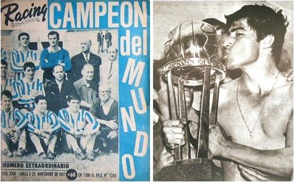
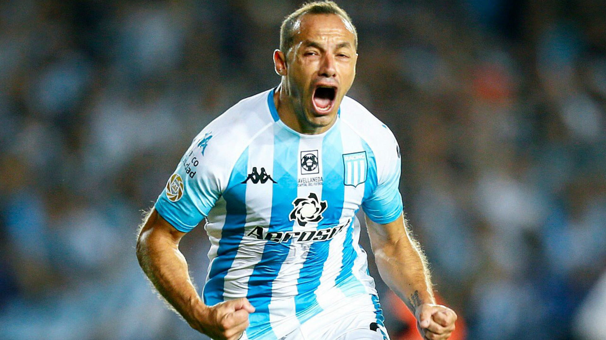

EL EQUIPO DE JOSÉ
El equipo de José logró una hazaña el 4 de noviembre de 1967, cuando alzó la Copa Intercontinental y se convirtió en el primer campeón mundial del fútbol argentino. En la producción de Contenidos, Radio Nacional, cómo fue la escalada hacia el podio máximo, desde que Racing Club de Avellaneda ganara el torneo local habiéndose mantenido invicto durante 39 partidos y luego colocara la Copa Libertadores en su vitrina. Recuerdos sobre las pulseadas del plantel del técnico Juan José Pizzuti frente al líder europeo, el Celtic, como visitante, como local y hasta la gloria final alcanzada en el estadio Centenario de Montevideo.
CON 9
Un clásico vibrante, que tuvo de todo. Racing jugó con 9 hombres por cincuenta minutos, luego de las expulsiones de Arias en el final del primer tiempo, y de Sigali en el arranque del segundo tiempo. La épica de La Academia, que tuvo que correr y aguantar todo el complemento. Finalmente tras el gol de Marcelo Díaz y las expulsiones de Domínguez y Leandro Romero en Independiente, sentenciaron un derby para el recuerdo a favor del local.
